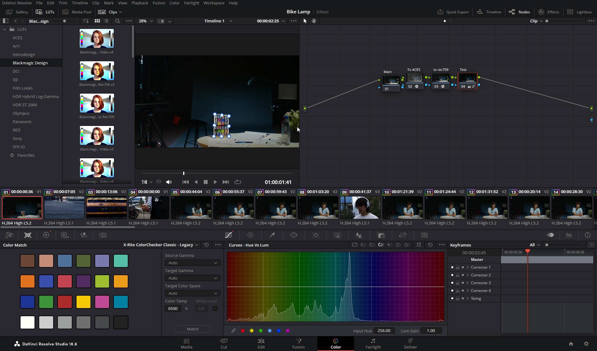

a creative documentary project about finding a lost bike lamp.

The Bike Lamp Movie is a documentary project where I handled videography, editing, and creative problem-solving. Recording the video was both enjoyable and challenging, requiring attention to detail to capture shots that aligned with the story's narrative. This process taught me the importance of planning each shot with editing in mind.
For editing, I transitioned from Adobe After Effects to Davinci Resolve, adapting to new workflows and refining techniques like color grading, transitions, and audio adjustments. Highlights included creating an animated title reveal, blending shots with seamless transitions, and adding 'crime scene' imagery for dramatic effect. This project sharpened my technical and storytelling skills in video production.